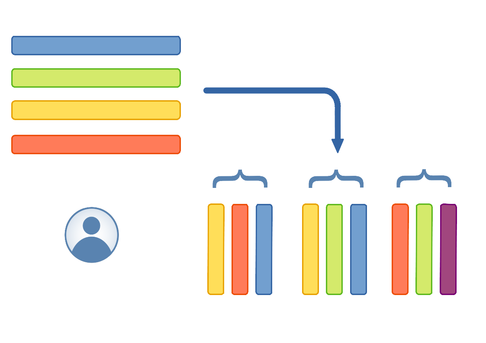
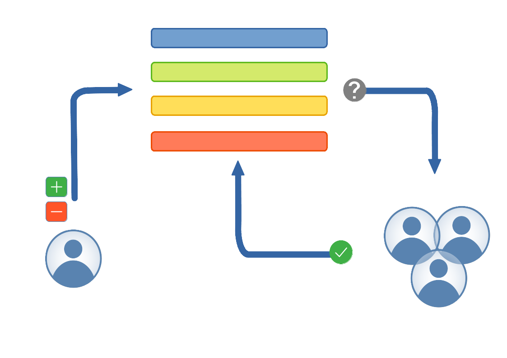

Hands-on tutorial¶
There are two parts to working with Friendly data. The files containing the metadata and datasets, and the set of conventions that need to be followed. We will start by understanding the conventions, so that working with the files later on will make sense.
Following which, we will look at how to work with the files. There are two ways of doing that: using the command line interface (CLI), and from a Python program using the Python API.
Table of Contents
Understanding the registry used by Friendly data¶
Currently only tabular datasets are supported, so we will limit our
discussion to tabular datasets like tables with one or more columns
(including time series). When working with tables it is common to
agree on a convention on how to identify rows uniquely. Typically
this is done by designating a column (or a set of columns) as the
index (or primary key). And like the index in a book, index entries
are required to be unique. We follow the same principle here, and
categorise a column either as an index column, or a regular (value)
column. Within the friendly_data framework we refer to them as
idxcols and cols respectively.
{kind=link}

Schematic representation of a data package, composed of multiple datasets, where metadata for various columns are taken from the registry. Note: the last column in the last dataset is not present in the registry, denoting that there is flexibility to deviate from the registry when necessary.¶
While a table (dataset/data resource) in a data package can have any
number of columns of either kind, it is often helpful during analysis
to designate an index. Friendly data implements this by having an
external registry that records all columns that are generally useful
in the context of SENTINEL models, and categorising these columns as
one or the other. These could be something like capacity_factor
or energy storage capacity costs (cost_storage_cap), or
coordinates of a site or location (loc_coordinates), or something
much more generic like timestep indicating the timesteps of a
demand profile. Among the aforementioned columns, timestep is the
only index-column.
{kind=link}

Updates to the registry undergoes a review process to gain consensus in the community. This should limit duplication of effort, and over time formalise the terminology.¶
In the beginning the registry will be evolving with time, and proposal for inclusion of new columns to suit your models, or renaming existing columns, or any other relavant changes are welcome. The goal is to reach a consensus on conventions that suit most of the SENTINEL partners.
Besides naming and classifying columns, the registry also has type
information; e.g. timestep is of type datetime (timestamp with
date), GPS coordinates are pairs of coordinates, so it would be a
fractional number (number), technology on the other hand is
the name of technologies, so they are strings. It can also include
constraints, e.g. capacity_factor is a number between 0
and 1, or technology can take one of a set of predefined
values. Now you might notice that, while everyone will agree with the
constraint on capacity_factor, the constraint on technology
will be different for different models. So this element is
configurable, and the Friendly data implementation infers the valid
set by sampling the dataset during package creation.
To review the current set of columns in the registry, please consult the complete registry documentation. Any changes or additions can be suggested by opening a Pull Request (PR) in the Friendly data registry repository on GitHub.
Column schema¶
The column schema can be specified either in YAML or JSON format. The
general structure is a Mapping (set of key-value pairs):
{
"name": "energy_eff",
"type": "number",
"format": "default",
"constraints": {
"minimum": 0,
"maximum": 1
}
}
while only the name property is mandatory in the frictionless
specification, for SENTINEL archive we also expect the type
property. Constraints on the field can be specified by providing the
constraints key. It can take values like required,
maximum, minimum, enum, etc; see the frictionless
documentation for details.
Learning by example¶
Now that we understand the general design of the registry, lets take a look at an example dataset, and consider how we can use the registry to describe the schema. Say we have the following dataset:
technology |
timestep |
capacity_factor |
|---|---|---|
ccgt |
2005-01-05 17:00:00 |
1.0 |
ccgt |
2005-01-05 18:00:00 |
1.0 |
ccgt |
2005-01-05 19:00:00 |
0.985 |
ccgt |
2005-01-05 20:00:00 |
0.924 |
ccgt |
2005-01-05 21:00:00 |
0.841 |
ccgt |
2005-01-05 22:00:00 |
0.768 |
ccgt |
2005-01-05 23:00:00 |
0.761 |
free_transmission |
2005-01-01 05:00:00 |
0.0 |
free_transmission |
2005-01-01 06:00:00 |
0.0 |
free_transmission |
2005-01-01 07:00:00 |
0.110 |
free_transmission |
2005-01-01 08:00:00 |
1.0 |
free_transmission |
2005-01-01 09:00:00 |
1.0 |
Our value column, capacity factor, is a kind of efficiency:
So the corresponding entry in the registry would be:
{
"name": "capacity_factor",
"type": "number",
"format": "default",
"constraints": {
"minimum": 0,
"maximum": 1
}
}
The first column, technology, should have an entry like this:
{
"name": "technology",
"type": "string",
"format": "default",
"constraints": {
"enum": [
"ccgt",
"free-transmission"
]
}
}
The enum property signifies that the column can only have values
present in this set. The timestep column looks like this:
{
"name": "timesteps",
"type": "datetime",
"format": "default"
}
To describe our dataset, we need to mark the columns technology
and timestep as index-columns. So the final schema would look
like this:
{
"fields": [
{
"name": "technology",
"type": "string",
"format": "default",
"constraints": {
"enum": [
"ac_transmission",
"ccgt",
]
}
},
{
"name": "timestep",
"type": "datetime",
"format": "default"
},
{
"name": "capacity_factor",
"type": "number",
"format": "default",
"constraints": {
"minimum": 0,
"maximum": 1
}
}
],
"missingValues": [
"null"
],
"primaryKey": [
"technology",
"timestep"
]
}
where, the key primaryKey indicates the set of index columns.
Introducing the index file¶
The implementation of Friendly data simplifies the above process by introducing an “index” file. In essence, much like the index of a book, it is the “index” of a data package. An index file lists datasets within the data package, and identifies columns in each dataset that are to be treated as the primary key (or index). Sometimes an index file entry may also contain other related info.
Let us examine how that might look using the capacity factor dataset as an example. The corresponding entry would look like this:
- path: capacity_factor.csv
idxcols:
- technology
- timestep
It can be stored in the index.yaml file in the top level directory
of the package. An index also supports attaching other information
about a dataset, e.g. if you need to skip n lines from the top
when reading the corresponding file, you can simply add the key
skip: n. All datasets need not be included in the index, just
that if a dataset is not included, it does not gain from the
structured metadata already recorded in the Friendly data registry,
but is otherwise perfectly valid; more details about the index file
can be found at Keys supported by the Package Index file.
Metadata¶
One of the advantages of using a data package is to be able to attach detailed metadata to your datasets. The CLI interface makes this relatively straightforward. You can create a dataset by calling:
$ friendly_data create --name my-pkg --licenses CC0-1.0 \
--keywords 'mymodel renewables energy' \
path/to/pkgdir/index.yaml path/to/pkgdir/data/*.csv \
--export my-data-pkg
Some of the options are mandatory, like --name and --licenses.
The command above will create a dataset with all the CSV files
that match the command line pattern, and all the files mentioned in
the index file. All datasets are copied to my-data-pkg, and
dataset schemas and metadata is written to
my-data-pkg/datapackage.json. If instead of --export,
--inplace (without arguments) is used, the datasets are left in
place, and the metadata is written to
path/to/pkgdir/datapackage.json.
A more convenient way to specify the metadata would be to use a configuration file, like this:
$ friendly_data create --metadata conf.yaml \
pkgdir/index.yaml pkgdir/data/*.csv \
--export my-data-pkg
The configuration file looks like this:
metadata:
name: mypkg
licenses: CC0-1.0
keywords:
- mymodel
- renewables
- energy
description: |
This is a test, let's see how this goes.
If there are multiple licenses, you can provide a list of licenses instead:
metadata:
licenses: [CC0-1.0, Apache-2.0]
Updating existing packages¶
You can also modify existing data packages like this:
$ friendly_data update --licenses Apache-2.0 path/to/pkg
Here you can see the package is being relicensed under the Apache version 2.0 license. You could also add a new dataset like this:
$ friendly_data update path/to/pkg path/to/new_*.csv
You could also update the metadata of an existing dataset by updating
the index file before executing the command. You can find more
documentation about the CLI by using the --help flag.
$ friendly_data --help
$ friendly_data update --help
Converting to IAMC format¶
The IAMC format from the IAM consortium is popular in the energy modelling community. So Friendly data provides workflows to convert a data package to IAMC output with some configuration.
The IAMC format allows the user to define their own hierarchy of variables. So when using Friendly data, you can associate specific files to different branches of the hierarchy. There are currently two ways of specifying this: 1. use a fixed string, and 2. use a format string with one or more user defined index columns.
A format string can be specified in the index file by adding an iamc key. If the string contains a column name enclosed in braces, when creating the IAMC file, corresponding values from the index column will be substituted in that position.
Let us consider the example data package:
$ tree
.
├── carrier.csv
├── conf.yaml
├── data
│ ├── flow_in_25.csv
│ ├── flow_in_50.csv
│ ├── flow_in_sum.csv
. .
. .
│ ├── flow_out_sum_const1.csv
│ ├── flow_out_sum_multi.csv
. .
. .
├── datapackage.json
├── index.yaml
├── LICENSE
├── README.md
└── technology.csv
If we consider the dataset flow_in_sum.csv, which looks like:
techs |
scenario |
year |
locs |
unit |
flow_in_sum |
|---|---|---|---|---|---|
electric_heater |
climate_neutrality |
2050 |
AUT |
twh |
27.39620468870247 |
electric_heater |
climate_neutrality |
2050 |
BEL |
twh |
43.24801979081346 |
… |
… |
… |
… |
… |
… |
light_transport_ev |
climate_neutrality |
2050 |
AUT |
twh |
29.348459228522366 |
light_transport_ev |
climate_neutrality |
2050 |
BEL |
twh |
42.41184567122542 |
The IAMC format requires that the data have the columns: model, scenario, region, variable, unit, and value. If the data is in “long format”, then it should also have a column year. In the above dataset, locs is an alias for region, but there are no columns for model, variable, or value, and there is an additional column called techs.
The corresponding entry in the index file looks something like this:
- alias:
locs: region
techs: technology
iamc: Hourly power consumption|Yearly|{technology}
idxcols:
- techs
- scenario
- year
- locs
- unit
name: Hourly power consumption|Yearly
path: data/flow_in_sum.csv
The alias key declares that, techs is to be treated as
technology, and locs as region - that satisfies one of the
missing columns required by the IAMC specification. You will also
note, there is a iamc key. This mentions technology in {...}.
This is a format string, which means all occurences of technology
are to be replaced by the corresponding values in data; in this case
electric_heater and light_transport_ev. The resulting string is
then available under the variable column. However you will note,
the technology names are not particularly descriptive, so you probably
want to replace them with something more commonly used in an IAMC
dataset. These alternate names can be specified in a separate CSV
file, and provided in the configuration file. If we refer to the
example data package, we will find a conf.yaml file, which has
a section like this:
indices:
technology: technology.csv
carrier: carrier.csv
model: calliope
The above configures technology names to be resolved as per
technology.csv, which looks like this:
name |
iamc |
|---|---|
electric_heater |
Electricity|Heating |
light_transport_ev |
Electricity|Road |
In the same configuration snippet, you can see there’s a key for model, but instead of pointing to a file like technology, it specifies a string. If a model column does not exist in your dataset, this string will be taken as the default value for such a column. This leaves only the value column, which is nothing but the data column, in our example, flow_in_sum. And we have our data in IAMC format!
model |
scenario |
region |
variable |
unit |
year |
value |
|---|---|---|---|---|---|---|
calliope |
climate_neutrality |
AUT |
Hourly power consumption|Yearly|Electricity|Heating |
twh |
2050 |
27.39620468870247 |
calliope |
climate_neutrality |
BEL |
Hourly power consumption|Yearly|Electricity|Heating |
twh |
2050 |
43.24801979081346 |
… |
… |
… |
… |
… |
… |
… |
calliope |
climate_neutrality |
AUT |
Hourly power consumption|Yearly|Electricity|Road |
twh |
2050 |
29.348459228522366 |
calliope |
climate_neutrality |
BEL |
Hourly power consumption|Yearly|Electricity|Road |
twh |
2050 |
42.41184567122542 |
This kind of replacement from values in the dataset can de done with multiple columns, e.g. the index entry for flow_out_25_multi.csv looks like this:
- iamc: Generation|Percentile 25|{carrier}|{technology}
idxcols:
- carrier
- technology
- scenario
- year
- region
- unit
name: Generation|Percentile 25
path: data/flow_out_25_multi.csv
Here, all possible combinations of technology and carrier will be
tried, and only the ones present in the data will be included in the
final output. If you do not need something like this, you can always
use a regular string (without any {...}) to denote what should be
in the variable column (see the example data package for other
examples).